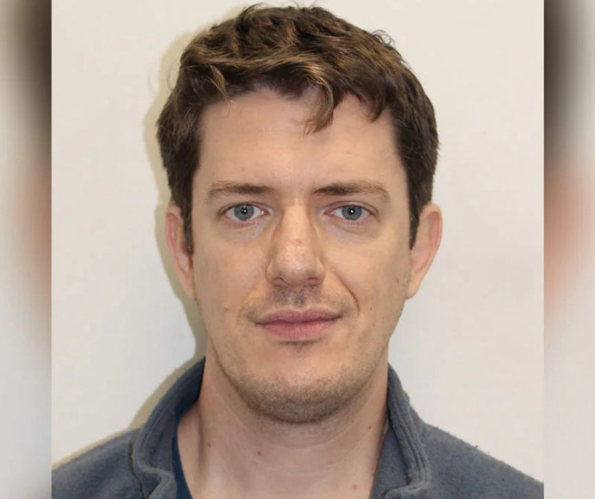
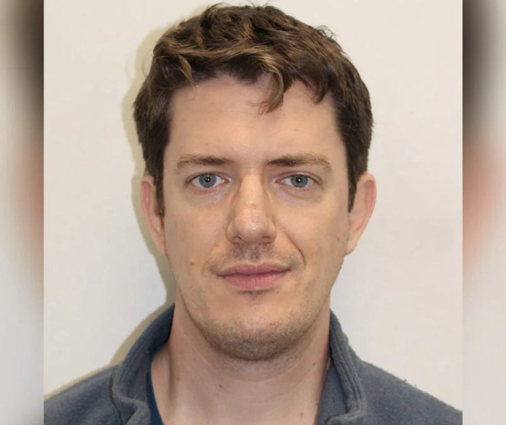

UK Teacher Paid for the Abuse of Children
A teacher was sentenced to 12 years in prison for paying and instructing teenagers in India to abuse children.

The National Crime Agency (NCA) arrested 35-year-old Matthew Smith of London in November 2022, after establishing that he had been distributing child abuse material through the dark web.
The arresting officers found Smith logged in to multiple child pornography sites and forums on the dark web. On one of the sites, he saw asking a young man in India to send him child abuse images in exchange for cash.
A review of Smith's chatlogs on the child abuse platforms and financial records revealed that he had paid two Indian men a total of over £65,398 to abuse children for over five years. The chatlogs also revealed that Smith had been giving the young men instructions on how they would abuse the children. He also provided them with examples of images and videos he expected the young men to send him. He even gave one of the young men advice on how he would gain his victims' trust before abusing them.
Smith was working at a school in Nepal during his offending. Before moving to Nepal he was working working in orphanages and NGOs in India between 2007-2014. The NCA established that he may have engaged in child abuse during his stay in India. He moved to the UK in mid-2022 and became the deputy head teacher and head of pastoral care at a primary school in London.
The investigators recovered over 120,000 images of child abuse from Smith's electronic devices. He pleaded guilty to a total of 22 offenses. The charges include, arranging the sexual abuse of a child, encouraging the rape of a child under 13, and causing a child under 13 to engage in sexual activity.
In addition to the 12-year prison term, the Southwark Crown Court placed him on the sex offenders register for life.

Matthew Smith
The National Crime Agency (NCA) arrested 35-year-old Matthew Smith of London in November 2022, after establishing that he had been distributing child abuse material through the dark web.
The arresting officers found Smith logged in to multiple child pornography sites and forums on the dark web. On one of the sites, he saw asking a young man in India to send him child abuse images in exchange for cash.
A review of Smith's chatlogs on the child abuse platforms and financial records revealed that he had paid two Indian men a total of over £65,398 to abuse children for over five years. The chatlogs also revealed that Smith had been giving the young men instructions on how they would abuse the children. He also provided them with examples of images and videos he expected the young men to send him. He even gave one of the young men advice on how he would gain his victims' trust before abusing them.
Smith was working at a school in Nepal during his offending. Before moving to Nepal he was working working in orphanages and NGOs in India between 2007-2014. The NCA established that he may have engaged in child abuse during his stay in India. He moved to the UK in mid-2022 and became the deputy head teacher and head of pastoral care at a primary school in London.
The investigators recovered over 120,000 images of child abuse from Smith's electronic devices. He pleaded guilty to a total of 22 offenses. The charges include, arranging the sexual abuse of a child, encouraging the rape of a child under 13, and causing a child under 13 to engage in sexual activity.
In addition to the 12-year prison term, the Southwark Crown Court placed him on the sex offenders register for life.